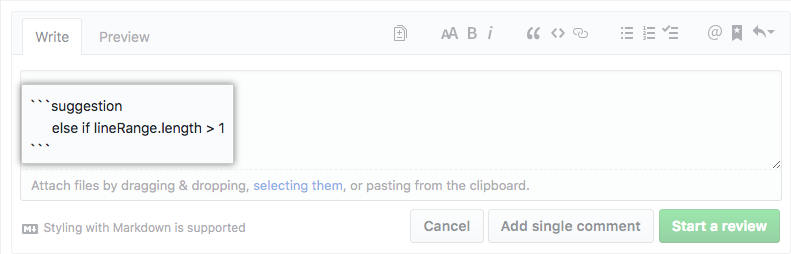

How to make a pull request?
Open a Pull Request

Pull Requests initiate discussion about your commits. Because they're tightly integrated with the underlying Git repository, anyone can see exactly what changes would be merged if they accept your request.
You can open a Pull Request at any point during the development process: when you have little or no code but want to share some screenshots or general ideas, when you're stuck and need help or advice, or when you're ready for someone to review your work. By using GitHub's @mention system in your Pull Request message, you can ask for feedback from specific people or teams.
More information on how to make a pull request can be found on github.
Describe how to test your changes
Pull Requests frame a problem by describing it. Maybe you're trying to fix a bug, add a feature, or trying out a new code pattern. Having a proper problem description ensures that your reviewer knows what their getting into.
To let your reviewer know how to run your code, describe how to test it properly. Lay out a scenario that gives a basic runthrough from set up to expected outcome.
The usual template goes like this:
This PR solves the waterleak in the coffee machine, fixes issue #33.
How to test :
0. Clone this feature! `git clone -b your-awesome-feature https://github.com/clinical-genomics/<your-repo>`
1. copy test db
2. test feature
Expected outcome:
leak is now solved!
Are there multiple angles you can test your feature with? Awesome! Specify a test case for each scenario.
Not only does this help your reviewer navigate your code, it also helps you. By describing the feature step by step for someone else, it ensures you have not missed anything critical.
Discuss and review your code

Once a Pull Request has been opened, the person or team reviewing your changes may have questions or comments. Read how to request a pull request review.
You can also continue to push to your branch in light of discussion and feedback about your commits. If someone comments that you forgot to do something or if there is a bug in the code, you can fix it in your branch and push up the change. GitHub will show your new commits and any additional feedback you may receive in the unified Pull Request view.
ProTip
Pull Request comments are written in Markdown, so you can embed images and emoji, use pre-formatted text blocks, and other lightweight formatting. You even can suggest commitable changes right in the comment.
A review focusses on the code health and on production readiness. If you're unsure on how to review a pull request, read more about it on github.
Code health
Perhaps the coding style doesn't match project guidelines, the change is missing unit tests, or maybe everything looks great and props are in order. Pull Requests are designed to encourage and capture this type of conversation.
ProTip
You can suggest changes directly in a comment, by hittin the . 
Production readiness
The Pull Request template lays out one or more scenarios on how to test your code. The reviewer will go through a scenario and document the results and whether or not the test is passing. The reviewer should be generous with comments, descriptions, and screenshots and ask for explanation or improvements as the test is progressing.
The reviewer will describe if the test scenario passes.
Test your changes

Before any code is deployed into production it needs to be tested in a production like environment: stage. To make your life easier, read up on how to make an update script to update your tool for each environment right here.
Merge your feature

Now that your changes have been verified in a production like environment, it is time to merge your code.
Make sure the code has been signed off before proceding!
ProTip
Squashing commits of a pull request improves the readability of the commit history. During development commit early and often. Once your work is ready merge with a focussed commit message. By default, the merge button for repositories will be set to "Squash and merge".
Once merged, Pull Requests preserve a record of the historical changes to your code. Because they're searchable, they let anyone go back in time to understand why and how a decision was made.
ProTip
By incorporating certain keywords into the text of your Pull Request, you can associate issues with code. When your Pull Request is merged, the related issues are also closed. For example, entering the phrase
Closes #32would close issue number 32 in the repository. For more information, check out our help article.